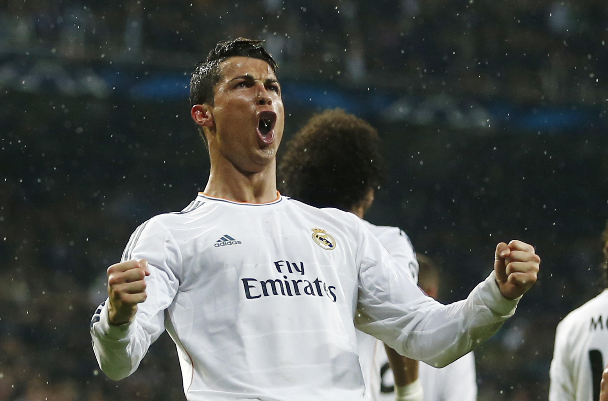
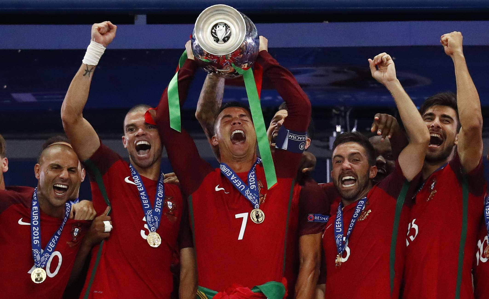

2010 – 2020
Real Madrid, records, and pure domination.
Real Madrid Dynasty
At Real Madrid, Ronaldo reached a whole new level. He scored more than 450 goals in just 9 years. He won 4 Champions League titles and 4 Ballon d'Ors.
He also had an amazing rivalry with Lionel Messi. Every year they competed for the best player award.
In the 2011–12 La Liga season, Ronaldo scored 50 goals — a single season record at the time.
La Liga Record

Euro 2016 — Portugal Champions!

In 2016, Ronaldo led Portugal to win Euro 2016 in France. It was Portugal's first ever major trophy.
Ronaldo got injured early in the final against France. Portugal won 1–0 in extra time.
Big Moments 2010–2020
- Won 4 Champions League titles with Real Madrid
- Won 4 Ballon d'Or awards
- Scored 50 La Liga goals in one season
- Won Euro 2016 with Portugal
- Moved to Juventus in 2018 for £100 million
Move to Juventus
In 2018, Ronaldo left Real Madrid and joined Juventus in Italy for £100 million. At Juventus, he won the Italian league twice.
| Year | Achievement |
|---|---|
| 2011–12 | 50 La Liga goals in one season |
| 2012–16 | 4 Ballon d'Or awards |
| 2014–18 | 4 Champions League titles |
| 2016 | Euro 2016 winner with Portugal |
| 2018 | Joined Juventus for £100 million |